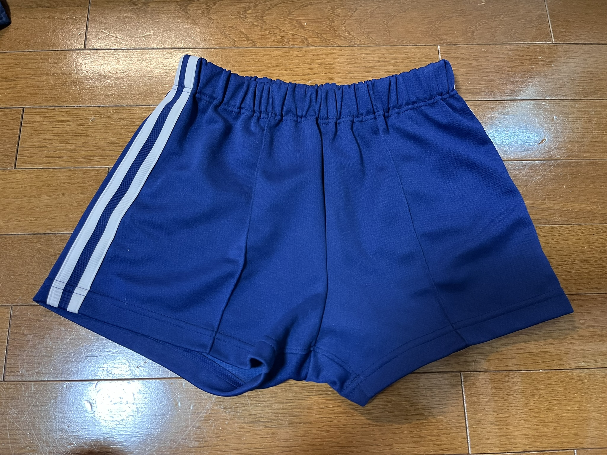
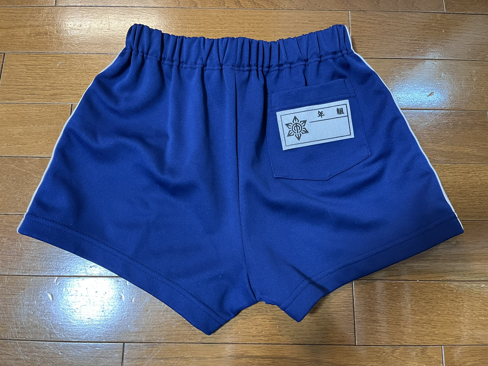
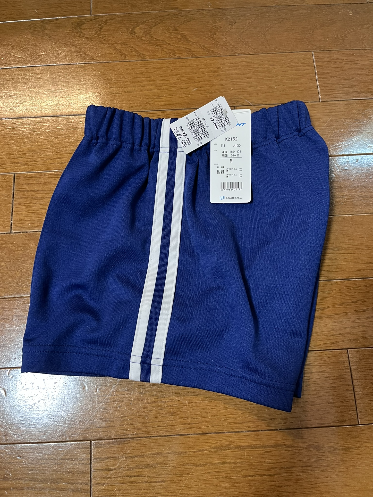
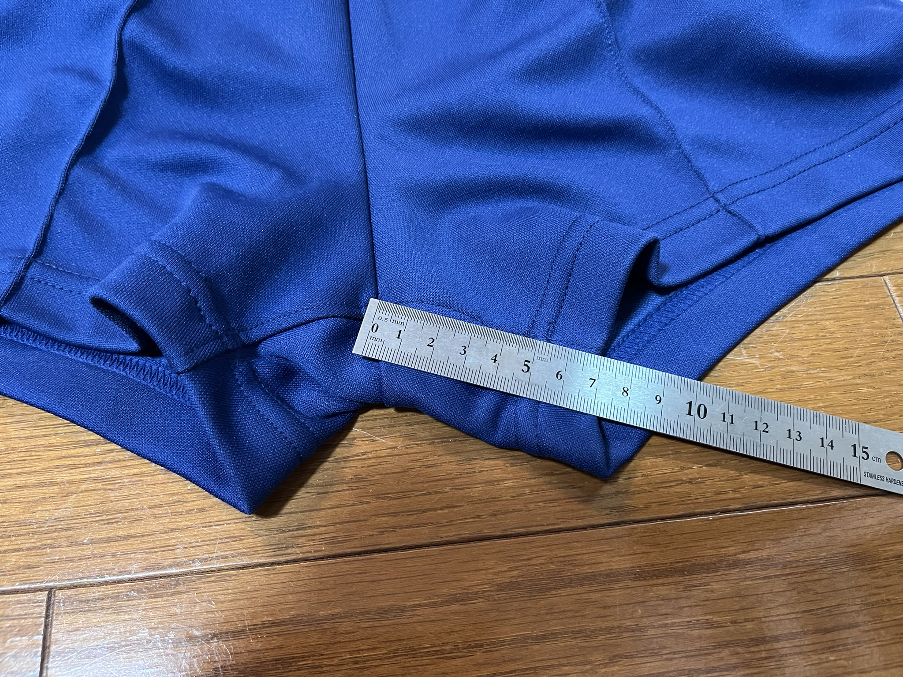
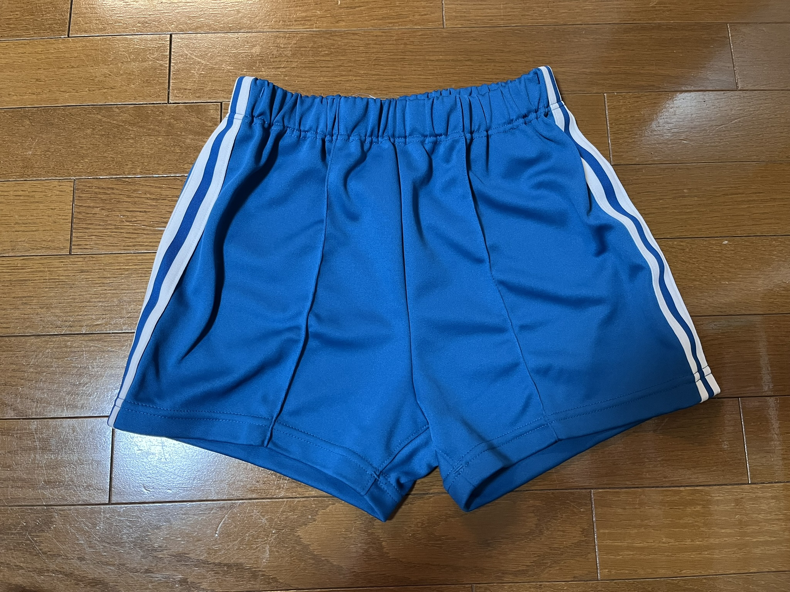
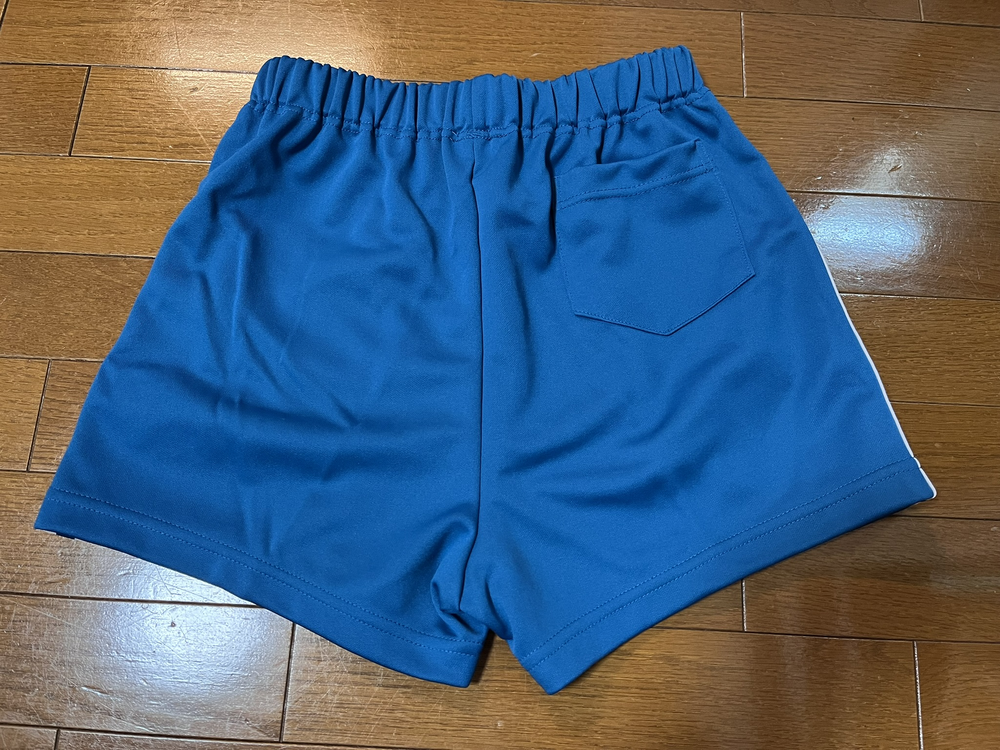
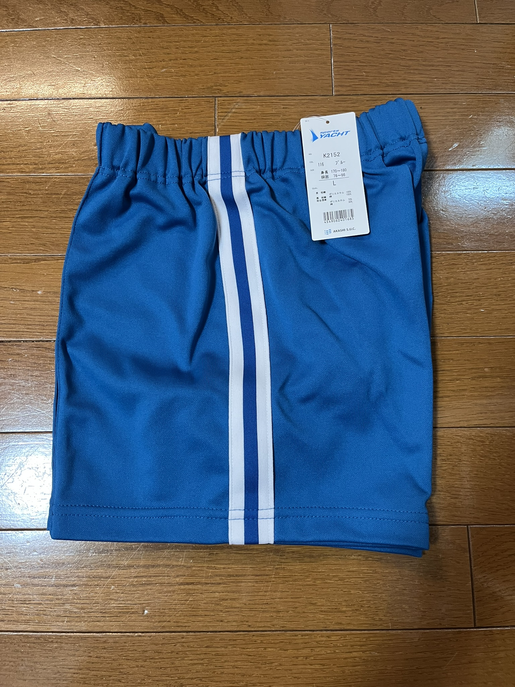
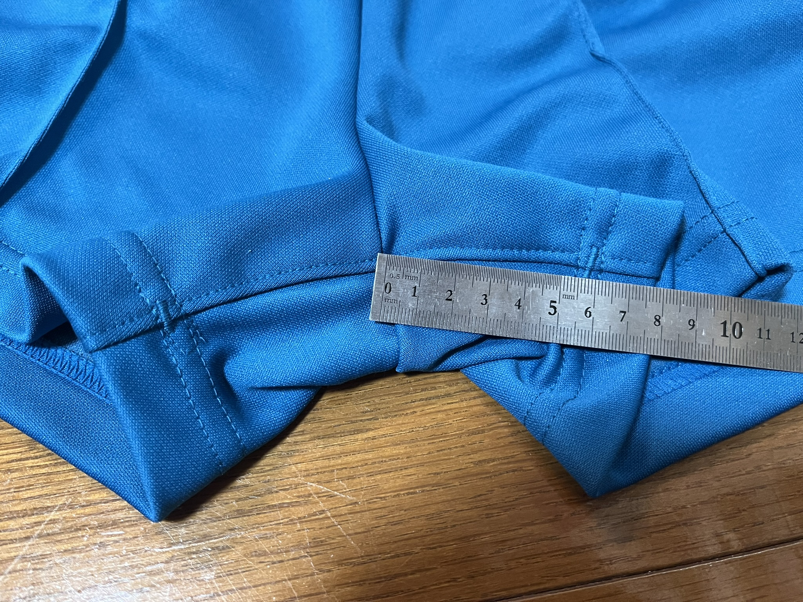

| 項目 | 情報 |
|---|---|
| 写真 |
    |
| 製造会社 | 富士ヨット |
| 股下 | 7cm(M),7.5cm(L) |
| 総丈 | 29cm(M),31cm(L) |
| 股上 | 28cm(M),29cm(L) |
| メモ | とにかく短い。これぞショート丈という長さ。 |
| 販売店情報 | |
| 採用校 |
|
| 採用校についてのメモ | 奥田衣料品店はグーグルマップに情報なし。木津小学校はハーフパンツにチェンジ済み |
| 項目 | 情報 |
|---|---|
| 写真 |
    |
| 製造会社 | 富士ヨット |
| 股下 | 8cm(L) |
| 総丈 | 33cm(L) |
| 股上 | 30cm(L) |
| メモ | 紺色と同じ型番だが、丈が少し長い。製造過程によってムラがある可能性あり。 |
| 販売店情報 | |
| 採用校 |
|
| 採用校についてのメモ | 販売店においてもショートパンツと呼称。井手町内の小学校は2校のみだがどちらもショートパンツ採用。 |